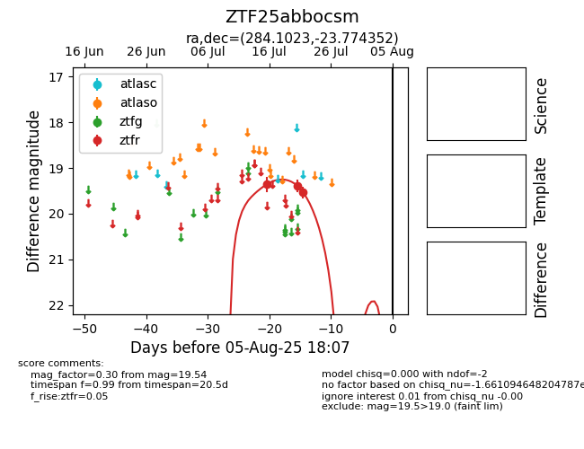

Target ZTF25abbocsm at 2025-08-05 18:07, see:
FINK: fink-portal.org/ZTF25abbocsm
Lasair: lasair-ztf.lsst.ac.uk/objects/ZTF25abbocsm
ALeRCE: alerce.online/object/ZTF25abbocsm
alt names
ZTF25abbocsm (ztf,fink)
coordinates:
equatorial (ra, dec) = (284.1023,-23.77435)
galactic (l, b) = (12.0123,-11.62405)
photometry
last ztfr=19.54
3 ztfr detections
